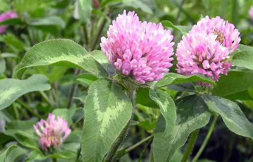

Red Clover
Trifolium pratense

Red clover is a flowering plant commonly found in fields and meadows,
known for its pinkish purple blossoms and use in herbal traditions.
Identification Tip: Red clover is identified by its round clusters of pink to purple flowers and its distinctive three part leaves.
Traditional Use: Traditionally, red clover has been used in herbal teas and wellness practices, and is especially known for supporting menopausal symptoms such as hot flashes and hormonal balance.
Nutrition: Red clover contains vitamins C and some B vitamins, along with minerals such as calcium, magnesium, and potassium.